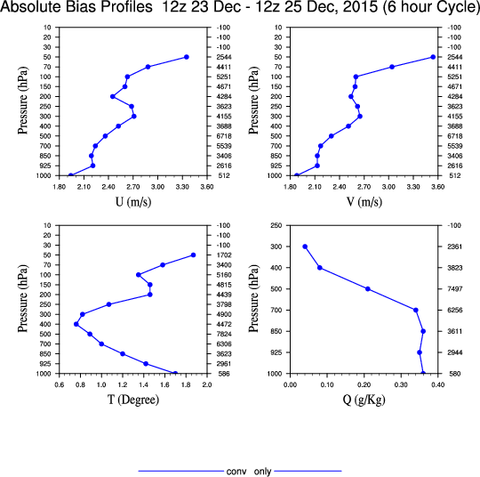

Case description
In this exercise you will be running verification scripts on pre-generated WRF-WRFDA cycling forecasts. This is a case from late December, 2013, when a major extratropical cyclone impacted northwestern Europe. It is the same domain as was used for the radiance practice. There are 3 series of 6-hour forecasts you will use in this practice session:
- /kumquat/wrfhelp/DATA/WRFDA/verification/no_da contains a control case: 6-hour WRF forecasts initialized every 6 hours from 2013-12-23 00z to 2013-12-25 12z
- /kumquat/wrfhelp/DATA/WRFDA/verification/conv_only contains a cycling experiment: 6-hour forecasts every 6 hours, with the output of the previous forecast used to initialize the next forecast after assimilating conventional obs.
- /kumquat/wrfhelp/DATA/WRFDA/verification/conv_and_rad contains another cycling experiment: 6-hour forecasts every 6 hours, with the output of the previous forecast used to initialize the next forecast after assimilating conventional and AMSU-A radiance obs.
WRFDA Tools: Observation-based verification
This exercise will teach you how to run WRFDA verification tools for observation-based verification.
Reference: Download the tutorial presentation
Source code
Get the pre-compiled code, if you have not done so.
WRFDA/var/build/da_verif_obs.exe is the executable that will be used in this session. It will be called directly by scripts, so there is no need to have it in your working directory.
Choose your working directory
For this exercise you should create /kumquat/users/${USER}/DA/verif_obs and use this as your working directory.
mkdir /kumquat/users/${USER}/DA/verif_obs
cd /kumquat/users/${USER}/DA/verif_obs
You will need two scripts from the WRFDA TOOLS package: da_run_suite_verif_obs.ksh and da_verif_obs_plot.ksh. Copy them into your working directory.
cp /kumquat/wrfhelp/DATA/WRFDA/TOOLS/scripts/da_run_suite_verif_obs.ksh .
cp /kumquat/wrfhelp/DATA/WRFDA/TOOLS/scripts/da_verif_obs_plot.ksh .
The observation files which will be used for this observation verification exercise have been pre-generated (using the "QC-OBS" procedure mentioned in the talk); they can be found in /kumquat/wrfhelp/DATA/WRFDA/arctic_tutorial_case/filt_ob/
The easiest way to control these scripts is by creating a "wrapper" script that sets the appropriate environment variables, then calls the scripts in order. Open a new file "verif_obs_wrapper.ksh" in vi (or your preferred text editor), and type the following:
> vi verif_obs_wrapper.ksh
#!/bin/ksh -aeu
# Wrapper script for running WRFDA obs verification package
# Settings for ./da_run_suite_verif_obs.ksh
export CLEAN=false
export INITIAL_DATE=2013122312
export FINAL_DATE=2013122512
export WRFVAR_DIR=/kumquat/users/${USER}/DA/WRFDA
export SCRIPTS_DIR=/kumquat/wrfhelp/DATA/WRFDA/TOOLS/scripts
export EXP_DIR=`pwd`/conv_only
export OB_DIR=/kumquat/wrfhelp/DATA/WRFDA/arctic_tutorial_case/ob/
export FILTERED_OBS_DIR=/kumquat/wrfhelp/DATA/WRFDA/arctic_tutorial_case/filt_ob/
export BE_DIR=/kumquat/wrfhelp/DATA/WRFDA/arctic_tutorial_case/be/
export FC_DIR=/kumquat/wrfhelp/DATA/WRFDA/verification/conv_only/fc
export WINDOW_START=-3
export WINDOW_END=3
export CYCLE_PERIOD=6
export NUM_PROCS=4
export VERIFY_HOUR=6
export RUN_CMD="mpirun -np $NUM_PROCS"
export VERIFICATION_FILE_STRING=wrfout
# Here is where you set the appropriate namelist variables that the script will use to run WRFDA
export NL_ANALYSIS_TYPE=verify
export NL_E_WE=181
export NL_E_SN=181
export NL_E_VERT=41
export NL_DX=60000
export NL_DY=60000
export NL_SF_SURFACE_PHYSICS=2
export NL_NUM_LAND_CAT=24
./da_run_suite_verif_obs.ksh
# Settings for da_verif_obs_plot.ksh
export START_DATE=2013122312
export END_DATE=2013122512
export RUN_DIR="`pwd`/conv_only/plots"
export NUM_EXPT=1
export EXP_NAMES='conv_only'
export EXP_LEGENDS='(/"conv_only"/)'
export EXP_DIRS="$EXP_DIR"
export INTERVAL=6
export NUM_PROCS=4
export VERIFY_HOUR=00
export GRAPHICS_DIR=/kumquat/wrfhelp/DATA/WRFDA/TOOLS/graphics/ncl
export WRF_FILE="/kumquat/wrfhelp/DATA/WRFDA/cycling/run/2013122300/wrfout_d01_2013-12-23_00:00:00"
export Verify_Date_Range="12z 23 Dec - 12z 25 Dec, 2015 (${INTERVAL} hour Cycle)"
export OBS_TYPES='synop sound'
export NUM_OBS_TYPES=2
export PLOT_WKS=pdf #"pdf" will save plots in pdf format; "x11" will display the plots and not save them
./da_verif_obs_plot.ksh
|
Now make the script you just made executable using "chmod", then run it.
> chmod +x verif_obs_wrapper.ksh
./verif_obs_wrapper.ksh
Use "display" to view the plots that have been created (you can find them as .pdf files in the directory you set as "RUN_DIR"). You should see plots similar to the one at right.
Try running observation-based verification for the "conv_and_rad" case as well.
|
 |
WRFDA Tools: Analysis-based verification
This exercise will teach you how to run WRFDA verification tools for observation-based verification. We will be verifying the two assimilation experiments against the "control" experiment with no data assimilation.
WRFDA/var/build/da_verif_grid.exe is the executable that will be used in this session. It will be called directly by scripts, so there is no need to have it in your working directory.
Choose your working directory
For this exercise you should create /kumquat/users/${USER}/DA/verif_grid and use this as your working directory.
mkdir /kumquat/users/${USER}/DA/verif_grid
cd /kumquat/users/${USER}/DA/verif_grid
You will need a script from the WRFDA TOOLS package: da_verif_grid.ksh. Copy it into your working directory.
cp /kumquat/wrfhelp/DATA/WRFDA/TOOLS/scripts/da_verif_grid.ksh .
The easiest way to control this script is by creating a "wrapper" script that sets the appropriate environment variables, then calls the script. Open a new file "verif_grid_wrapper.ksh" in vi (or your preferred text editor), and type the following:
> vi verif_grid_wrapper.ksh
#!/bin/ksh -aeu
# Wrapper script for running WRFDA grid verification package
export WRFVAR_DIR=/kumquat/users/${USER}/DA/WRFDA
export SCRIPTS_DIR=/kumquat/wrfhelp/DATA/WRFDA/TOOLS/scripts
export GRAPHICS_DIR=/kumquat/wrfhelp/DATA/WRFDA/TOOLS/graphics/ncl
export NUM_EXPT=2
export CONTROL_EXP_DIR=/kumquat/wrfhelp/DATA/WRFDA/cycling/no_da
export EXP_DIRS='/kumquat/wrfhelp/DATA/WRFDA/verification/conv_and_rad /kumquat/wrfhelp/DATA/WRFDA/verification/conv_only'
export EXP_NAMES='CONV_RAD CONV_ONLY'
export VERIFICATION_FILE_STRING='wrfout'
export EXP_LEGENDS='(/"Conv and rad obs","Conventional obs"/)'
export START_DATE=2013122312
export END_DATE=2013122512
export INTERVAL=06
export VERIFY_HOUR=06
./da_verif_grid.ksh
|
Now make the script you just made executable using "chmod", then run it.
> chmod +x verif_grid_wrapper.ksh
./verif_grid_wrapper.ksh
Use "display" to view the plots that have been created in .pdf format. To the right is one example of the plots you should see. In this example we have specified the input information for both experiments in the wrapper script, so the two experiments are plotted together.
NOTE: Some of the plots will come out rotated 90 degrees. You can click on the images within the "display" program to see a menu which has a "Transform --> Rotate Left" option.
SECOND NOTE: These experiments are very simplified for ease of use on the classroom computer. Don't take the results too seriously.
|
 |
You are now done with the Tools/Verification practice case. If you still have time, you can go back and try some of the advanced exercises listed at the end of the 4dvar practice page.
|

{kind=link}